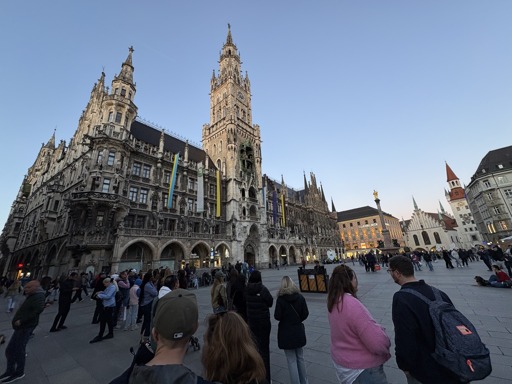
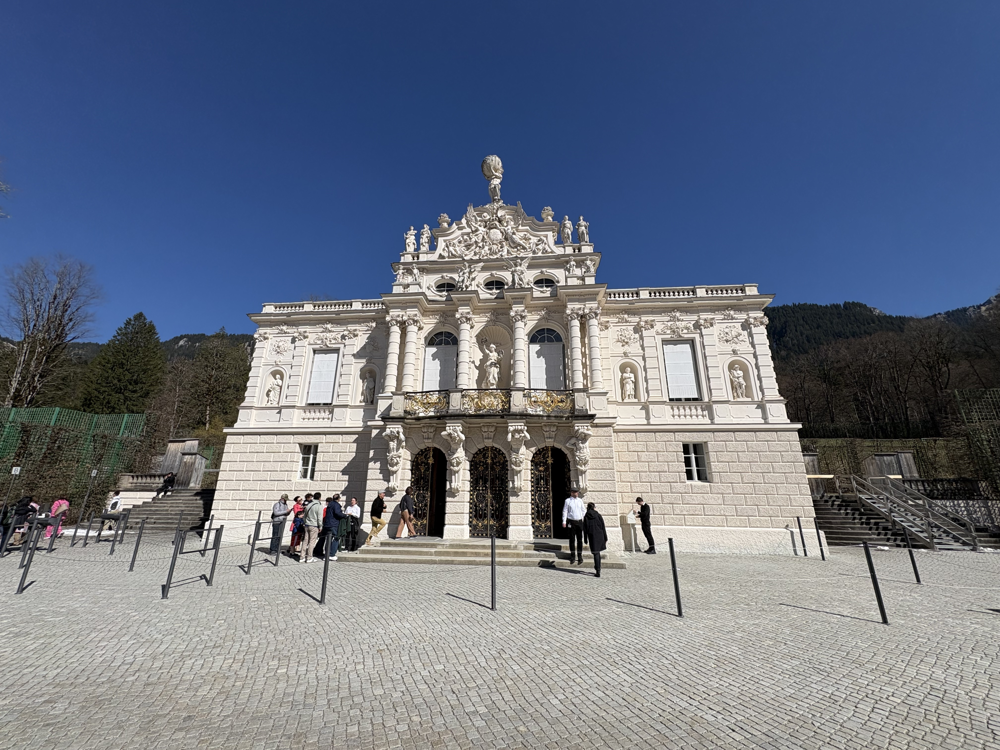
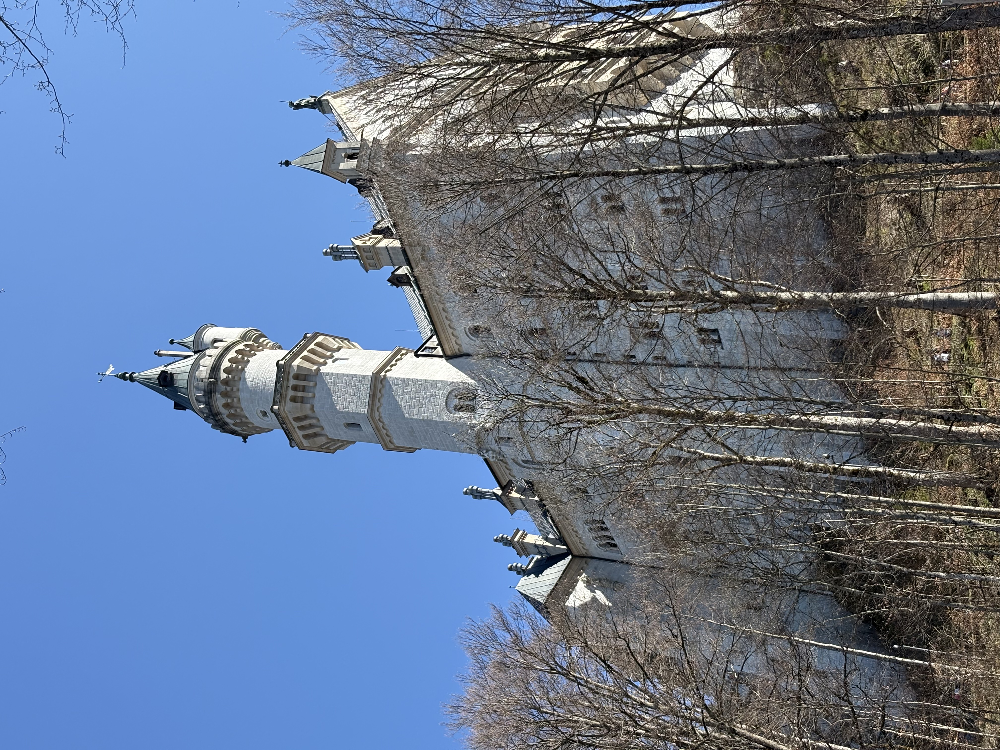

ICE 1507, Southbound
The ICE 1507 from Berlin Hauptbahnhof announced itself with German engineering efficiency — smooth, silent, devastatingly punctual. Germany moved past the window for four hours: flat northern plains giving way to rolling countryside, church steeples dotting villages, farmhouses with flower boxes on every windowsill. And then, as the train curved south, the faint outline of the Alps on the horizon like something your imagination invented.
Munich announced itself differently from Berlin. Cleaner. More ordered. More confident in its own beauty. Less interested in explaining itself. I stepped onto the platform at München Hauptbahnhof, walked to my hotel on Senefelderstraße, dropped my bag, washed my face, and walked straight back out. Munich was waiting.
Marienplatz: The Heart of Bavaria
Marienplatz hit me immediately. The massive neo-Gothic facade of Neues Rathaus dominates one entire side of the square — its famous Glockenspiel, a 43-bell carillon, chimes daily at 11am, noon and 5pm with mechanical figures dancing in the tower. I arrived in the evening, well after the last show, so I got the square to myself in the way you only can once the crowds have thinned: the Rathaus lit up against a darkening sky, the silent Glockenspiel frozen mid-story above me.
Opposite stands Frauenkirche — Munich's cathedral, twin green copper-domed towers rising 99 metres, built in red brick Gothic between 1468 and 1488. There's a city law that no building may be taller than those towers. That's why Munich has no skyscrapers. And why it's more beautiful for it.
I found a café table directly opposite and ordered a Maß of Münchner Hell — golden, crisp, clean. Six hundred years of the same beer, in the same city, under the same towers. I sat there for a long time. One of the great travel moments. Simple, perfect, unrepeatable.

Hofbräuhaus: One Litre of Bavaria
Founded in 1589 by Duke Wilhelm V as a royal brewery and opened to the public in 1828, Hofbräuhaus holds 3,500 people. I went on the first evening. Long wooden tables, an oompah band playing with total commitment, the whole hall packed with strangers from every continent sharing steins and laughing at the sheer improbable joy of it all.
I ordered a Schweinshaxe — Bavarian pork knuckle — which arrived looking like something a Viking would wrestle at a medieval feast: crispy crackling skin, meat falling off the bone, bread dumplings underneath. Magnificent, prehistoric, and entirely too much food for one person. I didn't finish it. Nobody ever does.
The oompah band played Ein Prosit four times. Each time, the whole hall erupted — glasses up, voices loud, strangers clinking with strangers. I had always associated it with Oktoberfest, the kind of thing tourists perform in September costumes. Hearing it in April, in a room full of ordinary people on an ordinary Tuesday, I understood it differently. I watched more than I joined in. Some things you observe before you earn the right to participate.
Oberammergau & the Road to Linderhof
On the second day I took a tour bus south into the Bavarian Alps. The first stop was Oberammergau — a small village famous for its Passion Play (performed every ten years since 1634) and its remarkable tradition of façade painting: entire building fronts covered in trompe-l'oeil scenes of Biblical stories, pastoral landscapes, and elaborate folk designs. The effect, walking down a village street in February with snow still on the ground, is hallucinatory. Nothing looks quite solid.
From Oberammergau, the bus climbed higher into the mountains to Linderhof — the smallest of King Ludwig II's three palaces and the only one he lived in long enough to actually enjoy. It sits in a formal French garden in a valley ringed by forest: terraced fountains, manicured hedges, a small temple on the hillside. Inside, the rooms are relentlessly gilded — gold on the walls, gold on the ceiling, gold on the furniture. The dining table could be lowered through the floor into the kitchen below, allowing Ludwig to eat alone without ever encountering his servants. The man had a complicated relationship with other people.
Below the palace, in the hillside, is the Venus Grotto: an artificial stalactite cave built around a small lake, illuminated by coloured lights, containing a golden shell-shaped boat in which Ludwig would float in the dark and listen to Wagner performed by musicians hidden on the far shore. I have no way to improve on this fact. It is already perfect. A beautiful, eccentric, extraordinary man.

The Castle in the Clouds
Neuschwanstein is where the road ends and the fairy tale begins. It sits on a rocky outcrop above the village of Hohenschwangau, half-hidden by forest and cloud, its white limestone towers rising against whatever sky the Alps have decided to provide that day. Ludwig II began building it in 1869 and never finished it. He died in 1886 — found floating face-down in the Starnberger See under circumstances that have never been fully explained — and construction stopped with 15 rooms complete out of a planned 200. He had lived in the castle for 172 days. It opened to tourists seven weeks after his death.
The completed rooms are extraordinary. The Throne Room has no throne — Ludwig died before it was installed — but the space designed to hold it is Byzantine and vast: cobalt blue ceiling studded with gilt stars, a two-storey mosaic floor of animals and plants, columns of red porphyry. A throne was planned here that was never placed. The absence of it is somehow more powerful than any throne could have been.
The Singer's Hall was built for concerts that were never held. Ludwig's bedroom took four and a half years to carve — every surface covered with scenes from Tristan and Isolde — and he slept in it for eleven nights. The guide told us this with a tone that suggested she had made peace with the extravagance. I had not.
A Conversation at Altitude
On the bus to Neuschwanstein, I sat next to Doug — a retired schoolteacher from California, fluent in German in the way that only comes from decades of deliberate practice. We clicked immediately. I had not spoken English in four days; the words came out of me with a kind of relief I hadn't anticipated, like finally setting down something heavy.
In the seats directly behind us sat Kai and Machi, a Japanese couple. Their English was limited — fragments, really, held together with hand gestures and an expressiveness that made language feel almost beside the point. They were heading to the castle too, but they were nervous about the climb: unfamiliar terrain, unfamiliar language, the particular anxiety of being far from anything you recognise. When they realised I was heading up too, something shifted in them. They didn't say much. They didn't need to. They just stayed close.
I stayed with them the whole way up — not because anyone asked me to, but because it was clear that my being there mattered to them in a way that cost me nothing and meant everything to them. Doug walked with us too, occasionally translating a sign or a direction into something useful. The four of us reached the top together. The castle was extraordinary. The company was better.
We had lunch together at the base afterwards — four strangers from three continents, laughing and sharing stories over schnitzel in the shadow of a fairy tale.
"They said my company made their day easier. What they didn't know was that they made my whole trip richer."
This is why you travel alone.
Viktualienmarkt
Back in Munich that evening, I stopped at Viktualienmarkt — the open-air food market two minutes from Marienplatz, running since 1807, with a beer garden right at its centre. I pulled up a bench, ordered a beer and a wrap, and ate among locals who had clearly been doing exactly this for years. No tourist performance, no queue. Just the market going about its business around me, the sun still on the tables, and the particular satisfaction of sitting somewhere exactly like a person who belongs there.

EXPEDITION 002 — MUNICH & THE CASTLES
Did this story move you?